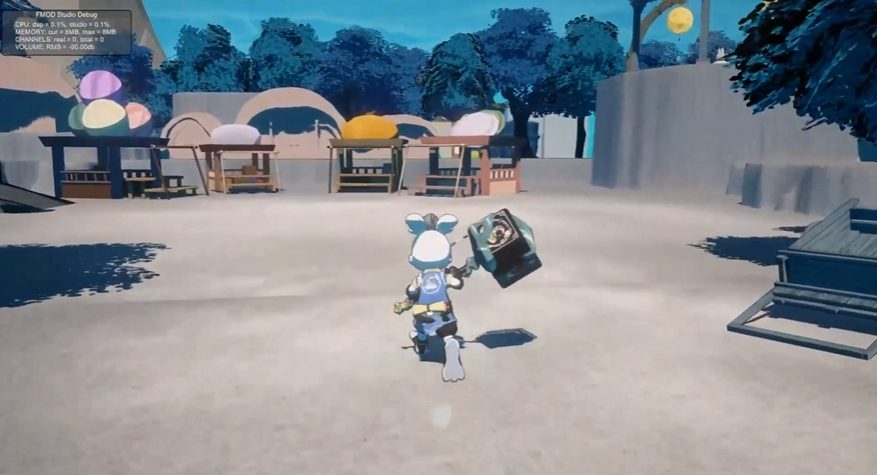

프로그래밍 완료
리소스만 붙이면 바로 쓸 수 있는 기능입니다. 이동·3타 공격·체력 시스템 등을 정리했습니다.
02 / TEAM · 2024.01—05
버니 프로젝트 (Apocalypse)
기획·그래픽·프로그래밍 파트가 함께 만든 Unity 3D 액션 게임입니다.
프로그래밍 파트장으로 참여했고, 프로젝트는 완성하지 못하고 중단됐습니다.

버니 프로젝트 플레이 영상 ↗01 / REQUIREMENTS
기획서가 비어 있어 개발이 멈춘 기능이 늘어나자, 프로그래밍 파트가 이해하기 쉬운 말로 질의서를 작성해 기획 회의에 가져갔습니다.
리소스만 붙이면 바로 쓸 수 있는 기능입니다. 이동·3타 공격·체력 시스템 등을 정리했습니다.
수치와 동작이 정해지지 않아 멈춘 기능입니다. 기능마다 확인할 질문을 붙였습니다.
기획 의도와 개발 의도가 맞지 않은 시스템입니다. UI·죽음·대화·락온 등을 모았습니다.
개발에 필요한 애니메이션·모델링·사운드 목록을 캐릭터와 몬스터별로 적었습니다.
회의에서는 말로 설명할 수 있는 기획은 먼저 구두로 정하고, 기획서 작성과 개발을 함께 진행하기로 했습니다. 기능별 담당자를 나눴고, 다음 점검에서는 캐릭터 기능 10개를 완료로 표시했습니다.
02 / DECISION
기획이 회의 중에 실시간으로 바뀌며 토론이 길어졌고, 그래픽 결과물이 원화와 다르게 나오거나 늦어졌습니다.
임원진 회의에서 최종 컨셉 결정권을 PD에게 모으고, 그래픽 퀄리티를 낮춰 먼저 진행한 뒤 QA 기간에 보완하자고 제안했습니다.
구상이 끝난 기획은 기획서로, 덜 끝난 기획은 최소 조건만 구두로 전달하고 그래픽이 시안 5개를 먼저 보여 주는 절차를 정했습니다.
03 / SCOPE & QA
물리 기반 이동으로 바꾸는 R&D가 길어지자 원래 방식으로 되돌리고, 카메라 흔들림과 화면 효과로 대신했습니다.
컷씬 카메라 연출은 시간이 남으면 넣고, 남지 않으면 빼기로 미리 정했습니다.
작업을 한 씬에 병합해 다른 파트에 몬스터 QA를 맡기고, 교내 학생 알파 테스터 일정을 잡았습니다.
AD와 함께 원화·모델러별 진행 현황을 하나씩 확인하는 회의도 따로 열었습니다.
04 / RESULT
규칙과 범위를 조정했지만 개발은 중단됐습니다. 이 프로젝트 다음에 진행한 미마미에서는 제작 범위를 먼저 줄여 튜토리얼까지 완성했습니다.
팀 드라이브에 남은 문서를 날짜순으로 요약했습니다.
팀원 실명과 개인 사정이 담긴 회의 원문은 게시하지 않습니다.